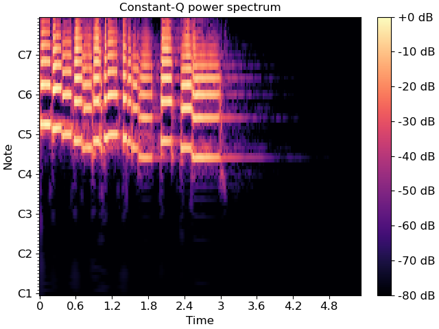

librosa.cqt¶
- librosa.cqt(y, *, sr=22050, hop_length=512, fmin=None, n_bins=84, bins_per_octave=12, tuning=0.0, filter_scale=1, norm=1, sparsity=0.01, window='hann', scale=True, pad_mode='constant', res_type=None, dtype=None)[source]¶
Compute the constant-Q transform of an audio signal.
This implementation is based on the recursive sub-sampling method described by 1.
- 1
Schoerkhuber, Christian, and Anssi Klapuri. “Constant-Q transform toolbox for music processing.” 7th Sound and Music Computing Conference, Barcelona, Spain. 2010.
- Parameters
- ynp.ndarray [shape=(…, n)]
audio time series. Multi-channel is supported.
- srnumber > 0 [scalar]
sampling rate of
y- hop_lengthint > 0 [scalar]
number of samples between successive CQT columns.
- fminfloat > 0 [scalar]
Minimum frequency. Defaults to C1 ~= 32.70 Hz
- n_binsint > 0 [scalar]
Number of frequency bins, starting at
fmin- bins_per_octaveint > 0 [scalar]
Number of bins per octave
- tuningNone or float
Tuning offset in fractions of a bin.
If
None, tuning will be automatically estimated from the signal.The minimum frequency of the resulting CQT will be modified to
fmin * 2**(tuning / bins_per_octave).- filter_scalefloat > 0
Filter scale factor. Small values (<1) use shorter windows for improved time resolution.
- norm{inf, -inf, 0, float > 0}
Type of norm to use for basis function normalization. See
librosa.util.normalize.- sparsityfloat in [0, 1)
Sparsify the CQT basis by discarding up to
sparsityfraction of the energy in each basis.Set
sparsity=0to disable sparsification.- windowstr, tuple, number, or function
Window specification for the basis filters. See
filters.get_windowfor details.- scalebool
If
True, scale the CQT response by square-root the length of each channel’s filter. This is analogous tonorm='ortho'in FFT.If
False, do not scale the CQT. This is analogous tonorm=Nonein FFT.- pad_modestring
Padding mode for centered frame analysis.
See also:
librosa.stftandnumpy.pad.- res_typestring [optional]
The resampling mode for recursive downsampling.
By default,
cqtwill adaptively select a resampling mode which trades off accuracy at high frequencies for efficiency at low frequencies.You can override this by specifying a resampling mode as supported by
librosa.resample. For example,res_type='fft'will use a high-quality, but potentially slow FFT-based down-sampling, whileres_type='polyphase'will use a fast, but potentially inaccurate down-sampling.- dtypenp.dtype
The (complex) data type of the output array. By default, this is inferred to match the numerical precision of the input signal.
- Returns
- CQTnp.ndarray [shape=(…, n_bins, t)]
Constant-Q value each frequency at each time.
See also
Notes
This function caches at level 20.
Examples
Generate and plot a constant-Q power spectrum
>>> import matplotlib.pyplot as plt >>> y, sr = librosa.load(librosa.ex('trumpet')) >>> C = np.abs(librosa.cqt(y, sr=sr)) >>> fig, ax = plt.subplots() >>> img = librosa.display.specshow(librosa.amplitude_to_db(C, ref=np.max), ... sr=sr, x_axis='time', y_axis='cqt_note', ax=ax) >>> ax.set_title('Constant-Q power spectrum') >>> fig.colorbar(img, ax=ax, format="%+2.0f dB")
Limit the frequency range
>>> C = np.abs(librosa.cqt(y, sr=sr, fmin=librosa.note_to_hz('C2'), ... n_bins=60)) >>> C array([[6.830e-04, 6.361e-04, ..., 7.362e-09, 9.102e-09], [5.366e-04, 4.818e-04, ..., 8.953e-09, 1.067e-08], ..., [4.288e-02, 4.580e-01, ..., 1.529e-05, 5.572e-06], [2.965e-03, 1.508e-01, ..., 8.965e-06, 1.455e-05]])
Using a higher frequency resolution
>>> C = np.abs(librosa.cqt(y, sr=sr, fmin=librosa.note_to_hz('C2'), ... n_bins=60 * 2, bins_per_octave=12 * 2)) >>> C array([[5.468e-04, 5.382e-04, ..., 5.911e-09, 6.105e-09], [4.118e-04, 4.014e-04, ..., 7.788e-09, 8.160e-09], ..., [2.780e-03, 1.424e-01, ..., 4.225e-06, 2.388e-05], [5.147e-02, 6.959e-02, ..., 1.694e-05, 5.811e-06]])
